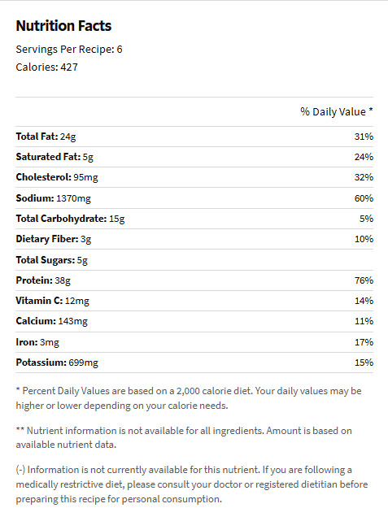

Indian Chicken Curry(Murgh Kari)
Want More Recipes? Click Here
Description:
Indian Chicken Curry (Murgh Kari) is a flavorful dish featuring tender chicken simmered in a spiced tomato-based sauce. Infused with garlic, ginger, cumin, turmeric, and garam masala, it offers a rich and aromatic taste. The curry is balanced with a touch of cream or yogurt for a smooth texture and garnished with fresh cilantro. Served with basmati rice or naan, this dish is a comforting and hearty classic of Indian cuisine.
Ingredients:
- 2 pounds skinless, boneless chicken breast halves
- 2 teaspoons salt
- ½ cup cooking oil
- 1 ½ cups chopped onion
- 1 tablespoon minced garlic
- 1 ½ teaspoons minced fresh ginger root
- 1 tablespoon curry powder
- 1 teaspoon ground cumin
- 1 teaspoon ground turmeric
- 1 teaspoon ground coriander
- 1 teaspoon cayenne pepper
- 1 tablespoon water
- 1 (15 ounce) can crushed tomatoes
- 1 cup plain yogurt
- 1 tablespoon chopped fresh cilantro
- 1 teaspoon salt
- ½ cup water
- 1 teaspoon garam masala
- 1 tablespoon chopped fresh cilantro
- 1 tablespoon fresh lemon juice
Want to make this?
Here are the steps:
- Gather all ingredients.
- Sprinkle the chicken breasts with 2 teaspoons salt. Heat oil in a large skillet over high heat; partially cook the chicken in the hot oil in batches until completely browned on all sides. Transfer browned chicken breasts to a plate and set aside.
- Reduce the heat to medium and add onion, garlic, and ginger to the oil remaining in the skillet. Cook and stir until onion turns soft and translucent, 5 to 8 minutes. Stir curry powder, cumin, turmeric, coriander, cayenne, and 1 tablespoon of water into the onion mixture; allow to heat together for about 1 minute while stirring.
- Add tomatoes, yogurt, 1 tablespoon chopped cilantro, and 1 teaspoon salt to the mixture; stir to combine.
- Return chicken breast to the skillet along with any juices on the plate. Pour in 1/2 cup water and bring to a boil, turning the chicken to coat with the sauce. Sprinkle garam masala and 1 tablespoon cilantro over the chicken.
- Cover the skillet and simmer until chicken breasts are no longer pink in the center and the juices run clear, about 20 minutes. An instant-read thermometer inserted into the center should read at least 165 degrees F (74 degrees C). Drizzle with lemon juice to serve.
Intrested in Macros?
